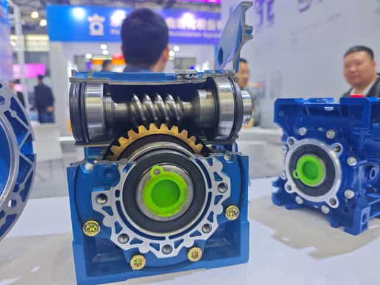

A worm gear, also called a worm drive, is a compact power-transmission system used when machinery needs high speed reduction, increased output torque and a right-angle layout. Common applications include conveyors, packaging machines, agricultural equipment, feeding systems and industrial automation.
What Is a Worm Gear?
A worm gear drive consists of a worm—the screw-shaped driving component—and a worm wheel, which is driven by the worm. They are normally arranged at approximately 90 degrees, making the design useful in compact machinery.
How Does a Worm Gear Work?
When the worm rotates, its helical thread pushes the teeth of the worm wheel. With a single-start worm, one revolution advances the worm wheel by approximately one tooth. If the wheel has 50 teeth, the theoretical ratio is 50:1.
Worm Gear Ratio and Output Speed
With a 1400 rpm motor and a 50:1 reducer, the estimated output speed is 1400 ÷ 50 = 28 rpm. Use the manufacturer’s exact catalog ratio and rated input speed for final calculations.
| Motor speed | Ratio | Estimated output speed |
|---|---|---|
| 1400 rpm | 20:1 | 70 rpm |
| 1400 rpm | 30:1 | 46.7 rpm |
| 1400 rpm | 50:1 | 28 rpm |
| 1400 rpm | 60:1 | 23.3 rpm |
Why Does a Worm Gear Increase Torque?
A gearbox exchanges speed for torque; it does not create power. As output speed decreases, available output torque increases, subject to efficiency and gearbox capacity.
For 2 Nm input torque, a 30:1 ratio and 70% assumed efficiency, the estimate is 2 × 30 × 0.70 = 42 Nm. This is not a gearbox rating. Final selection must remain within the permitted torque and thermal limits for the exact size, ratio and duty.
Why Can Worm Gears Achieve High Reduction Ratios?
A single-start worm driving a 60-tooth wheel provides approximately 60:1 reduction in one stage. This enables high ratios, low output speed, increased torque and compact right-angle transmission. The trade-offs can include sliding losses and heat.
Are Worm Gearboxes Self-Locking?
Some worm gearboxes resist backdriving, especially under particular geometry and static conditions. However, a high ratio does not automatically guarantee self-locking. Lead angle, worm starts, friction, lubrication, temperature, wear, vibration and load all affect behavior.
For safety-critical or suspended-load applications, use a correctly rated brake or holding system. Read the detailed worm gearbox self-locking guide.
Common Worm Gear Applications
- Conveyor systems
- Packaging machinery
- Food-processing equipment
- Agricultural machinery
- Auger and feeding systems
- Gates and doors
- Industrial automation
How to Select a Worm Gearbox
Determine motor power, input speed, required output speed, continuous and peak output torque, ratio, duty cycle, starts per hour, mounting position, shaft or hollow-bore size and environment. Choosing by ratio alone is not sufficient: verify service factor, efficiency, radial load, thermal capacity and lubrication.
| Required data | Why it matters |
|---|---|
| Motor power and input rpm | Defines gearbox input condition |
| Output speed and torque | Defines ratio and capacity |
| Duty and starts/hour | Affects service factor and heat |
| Mounting position | Affects installation and lubrication |
| Shaft or bore dimensions | Ensures mechanical fit |
Related resources: NMRV worm gear reducers, worm gear motors, ratio and torque calculations and SMK selection support.
Frequently Asked Questions
What is a worm gear used for?
A worm gear is mainly used to reduce rotational speed, increase available output torque and transmit power through a compact right-angle drive.
How do I calculate worm gearbox output speed?
Divide the motor input speed by the gearbox ratio. For example, 1400 rpm divided by 50 gives approximately 28 rpm.
Does a higher worm gear ratio provide more torque?
Generally, a higher reduction ratio increases theoretical torque multiplication, but actual output torque is limited by efficiency and the rated capacity of the gearbox.
Is a worm gearbox always self-locking?
No. Self-locking depends on lead angle, friction, lubrication, gearbox design and operating conditions—not simply the reduction ratio.
Conclusion
A worm gear converts high-speed, low-torque input into lower-speed, higher-torque output in a compact right-angle package. Correct selection requires more than ratio: torque, efficiency, service factor, thermal limits and operating conditions must also be verified.
Need help selecting a worm gearbox?
Provide motor power, input speed, required output speed and torque, mounting position and quantity.
REQUEST SELECTION SUPPORT →